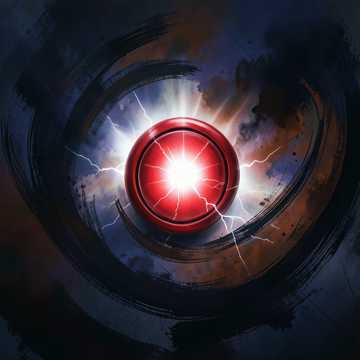
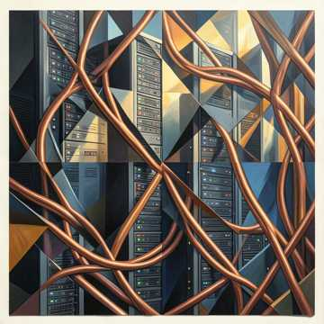

About
Asahi
After#Light のボーカル。高く軽い裏声寄りの声で、朝の光みたいに歌う。デジタルロックからバラードまで。
Akari
ゲストボーカル。澄んだ高音と、力強い地声のベルトが持ち味。「背中と背中」で Asahi と背中合わせに歌う。
After#Light は、個人ラジオ「ねるるの日常」から生まれた音楽プロジェクト。楽曲は AI 作曲サービス SUNO で生成し、タグ・歌詞・運営は人間が手で整えています。
#Architectural*Noise. presents
止まってた時間が、動き出す音。
Vocal: Asahi / Guest Vocal: Akari


After#Light のボーカル。高く軽い裏声寄りの声で、朝の光みたいに歌う。デジタルロックからバラードまで。
ゲストボーカル。澄んだ高音と、力強い地声のベルトが持ち味。「背中と背中」で Asahi と背中合わせに歌う。
After#Light は、個人ラジオ「ねるるの日常」から生まれた音楽プロジェクト。楽曲は AI 作曲サービス SUNO で生成し、タグ・歌詞・運営は人間が手で整えています。
—
0:00